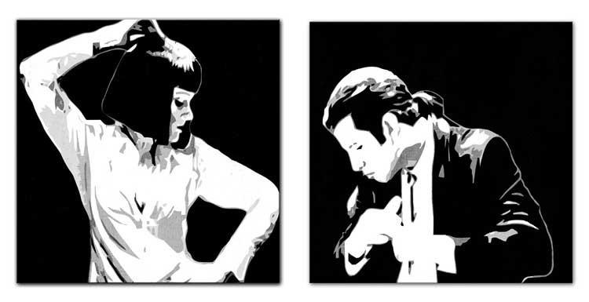

Summary & Background
Pulp Fiction is a 1994 American crime film written and directed by Quentin Tarantino. The film is based on a story by Tarantino and Roger Avary, and starred John Travolta, Samuel L. Jackson, Bruce Willis, Ving Rhames, and Uma Thurman. It tells several stories of criminal Los Angeles. The film's title refers to the pulp magazines and hardboiled crime novels popular during the mid-20th century, known for their graphic violence and punchy dialogue.
Tarantino wrote Pulp Fiction in 1992 and 1993, incorporating scenes that Avary originally wrote for True Romance (1993). Its plot occurs out of chronological order. The film is also self-referential from its opening moments, beginning with a title card that gives two dictionary definitions of "pulp". Considerable screen time is devoted to monologues and casual conversations with eclectic dialogue revealing each character's perspectives on several subjects, and the film features an ironic combination of humor and strong violence. Columbus TriStar reportedly turned down the script as "too demented". Miramax co-chairman Harvey Weinstein was enthralled, however, and the film became the first that Miramax fully financed.
Release & Box Office
Pulp Fiction premiered in May 1994 at the Cannes Film Festival. The Weinsteins "hit the beach like commandos", bringing the picture's entire cast over. The film was unveiled at a midnight hour screening and caused a sensation. It won the Palme d'Or, the festival's top prize, generating a further wave of publicity.
On October 14, 1994, Pulp Fiction went into general release in the United States. As Peter Biskind describes, "It was not platformed, that is, it did not open in a handful of theaters and roll out slowly as word of mouth built, the traditional way of releasing an indie film; it went wide immediately, into 1,100 theaters."In the eyes of some cultural critics, Reservoir Dogs had given Tarantino a reputation for glamorizing violence. Miramax played with the issue in its marketing campaign: "You won't know the facts till you've seen the fiction", went one slogan. Pulp Fiction was the top-grossing film at the box office its first weekend, edging out a Sylvester Stallone vehicle, The Specialist, which was in its second week and playing at more than twice as many theaters. Against its budget of $8.5 million and about $10 million in marketing costs, Pulp Fiction wound up grossing $107.93 million at the U.S. box office, making it the first "indie" film to surpass $100 million. Worldwide, it took in nearly $213 million. In terms of domestic grosses, it was the tenth biggest film of 1994, even though it played on substantially fewer screens than any other film in the top 20. Popular engagement with the film, such as speculation about the contents of the precious briefcase, "indicates the kind of cult status that Pulp Fiction achieved almost immediately." As MovieMaker puts it, "The movie was nothing less than a national cultural phenomenon." Abroad, as well: In Britain, where it opened a week after its U.S. release, not only was the film a big hit, but in book form its screenplay became the most successful in UK publishing history, a top-ten bestseller.
Accolades
Around the turn of the year, Pulp Fiction was named Best Picture by the National Society of Film Critics, National Board of Review, Los Angeles Film Critics Association, Boston Society of Film Critics, Society of Texas Film Critics, Southeastern Film Critics Association, and Kansas City Film Critics Circle.Tarantino was named Best Director by all seven of those organizations as well as by the New York Film Critics Circle and Chicago Film Critics Association.The screenplay won several prizes, with various awarding bodies ascribing credit differently. At the 52nd Golden Globe Awards, Tarantino, named as sole recipient of the Best Screenplay honor, failed to mention Avary in his acceptance speech.In February 1995, the film received seven Oscar nominations — Best Picture, Director, Actor (Travolta), Supporting Actor (Jackson), Supporting Actress (Thurman), Original Screenplay, and Film Editing. Travolta, Jackson, and Thurman were each nominated as well for the 1st Screen Actors Guild Awards, presented on February 25, but none took home the honor.At the Academy Awards ceremony the following month, Tarantino and Avary were announced as joint winners of the Academy Award for Best Original Screenplay.The furor around the film was still going strong: much of the March issue of Artforum was devoted to its critical dissection.Pulp Fiction garnered four honors at the Independent Spirit Awards, held at the end of the month — Best Feature, Best Director, Male Lead (Jackson), and Best Screenplay (Tarantino).At the British Academy Film Awards (BAFTA), Tarantino and Avary shared the BAFTA Award for Best Original Screenplay, and Jackson won for Best Supporting Actor.The film was nominated for the Grand Prix of the Belgian Film Critics Association.
Also, in the balloting by the National Society of Film Critics, Samuel L. Jackson was the runner-up in both the Best Actor and the Best Supporting Actor categories.